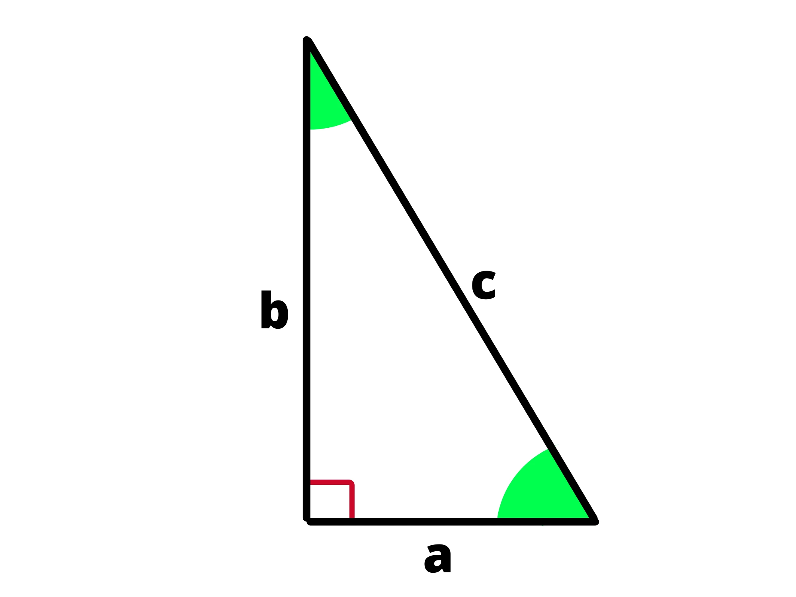
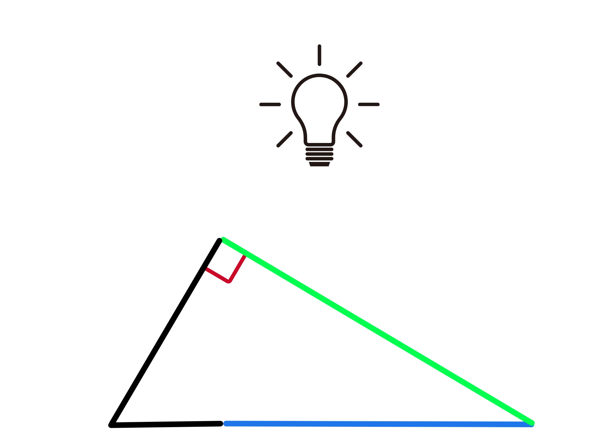

Teorema di Pitagora e i due Teoremi di Euclide
Abbiamo già studiato cosa sono i triangoli rettangoli. Ad essi si possono applicare tre teoremi: il teorema di Pitagora e i due teoremi di Euclide.
Teorema di pitagora
Prendiamo un triangolo rettangolo
I due lati adiacenti all'angolo retto (\(a\) e \(b\)) sono detti cateti, mentre il terzo lato, quello "lontano" dall'angolo retto è detto ipotenusa
Il teorema di Pitagora lega tra loro la lunghezza dei cateti e quella dell'ipotenusa, esso infatti afferma che:
La somma dei quadrati costruiti sui cateti (di un triangolo rettangolo) è uguale al quadrato costruito sull'ipotenusa.

Algebricamente lo si può tradurre come:
\(a^2 + b^2 = c^2\)
Quindi, a cosa ci serve questo teorema? Con esso possiamo trovare l'ipotenusa conoscendo i cateti, oppure possiamo trovare un cateto conoscendo l'altro e l'ipotenusa, basta isolare l'incognita desiderata nell'equazione:
\(c=\sqrt{a^2 + b^2 }\) per trovare l'ipotenusa
\(a=\sqrt{c^2 -b^2}\) per trovare il cateto \(a\)
\(b=\sqrt{c^2 -a^2 }\) per trovare il cateto \(b\)
Vediamo un esempio di come possiamo applicarlo:
un triangolo rettangolo ha cateti \(a\) e \(b\) sono lunghi rispettivamente \(3cm\) e \(4cm\), trovare la lunghezza dell'ipotenusa
Per farlo basta utilizzare il Teorema di Pitagora, che ci dice:
\(c^2 = a^2 + b^2\)
ovvero:
\(c=\sqrt{a^2 +b^2}\)
Quindi basta sostituire \(a\) e \(b\) per trovare l'ipotenusa \(c\):
\(c=\sqrt{(3cm)^2 + (4cm)^2 }\) \( = \sqrt{9cm^2 + 16cm^2}=\) \(\sqrt{25cm^2}=5cm \)
Ed ecco risolto. In questo caso abbiamo ottenuto tre valori interi per i lati del triangolo \((3,4,5)\) e siccome dobbiamo prendere un radice quadrata è piuttosto raro che escano dei numeri interi.
Questa terna di numeri viene chiamata terna pitagorica e quella che abbiamo appena visto \(3,4,5\) è la più piccola che esista. Perchè ci interessano le terne pitagoriche? Perché in alcuni casi ci aiutano a semplificare i calcoli.
Notiamo infatti una cosa interessante: se moltiplichiamo ogni termine della terna pitagorica per un numero intero \(k\), otteniamo un'altra tenra pitagorica. Perchè?
Dimostriamo quindi che la nuova terna ottenuta è una terna Pitagorica nel caso della nostra terna \(3,4,5\), per le altre terne basta applicare lo stesso ragionamento.
una volta moltiplicati per \(k\), la nuova terna divcenterà \((3k,4k,5k)\), applichiamo il teorema di pitagora e vediamo se lo verificano:
\(c^2 = a^2 + b^2\)
\(25k^2 = 9k^2 + 16k^2\)
\(25k^2 = 25k^2\)
L'uguaglianza è verificata. Geometricamente questo ha senso perchè moltiplicare ogni lato per una costante \(k\) equivale a rimpicciolire o ingrandire il triangolo, quindi è ovvio che rimarrà un triangolo rettangolo.
Ma perchè abbiamo fatto tutto? Perchè ora se abbiamo, ad esempio, due cateti di lunghezza \(6cm\) e \(8cm\), sappiamo subito che l'ipotenusa sarà lunga \(10cm\).
I cateti sono infatti quelli della terna pitagorica ma moltiplicati per \(2\), quindi \(k=2\) e dunque l'ipotenusa deve essere il doppio di \(5cm\), ovvero \(10cm\).
Se quindi vi capita di trovare due cateti nella forma \(3k\) e \(4k\), sapete già che l'ipotenusa sarà \(5k\). Questo è specialmente utile per \(k\) molto grandi.
Se per esempio avessimo due cateti lunghi \(39cm\) e \(52cm\), sarebbe un po' lungo fare i calcoli perchè li dovreste elevare al quadrato, sommarli e prendere la radice quadrata. Se però notate che:
\(39=13 \cdot 3\) e \(52= 13 \cdot 4\), sapete già che l'ipotenusa sarà \(13 \cdot 5 \), ovvero \(60\). Esistono poi altre terne pitagoriche utili da sapere a memoria, ma per ora ci fermiamo qui.
Primo teorema di Euclide
Passiamo quindi ai Teoremi di Euclide, sono molto meno famosi e generalmente meno utili del Teorema di Pitagora, ma ci possono aiutare a risolvere molti problemi.
Il primo teorema di Euclide enuncia che:
Il quadrato costruito su uno dei cateti (in un triangolo rettangolo) è uquivalente al rettangolo che ha per dimensioni la proiezione del cateto sull'ipotenusa e l'ipotenusa stessa.
Cosa si intende per proiezione del cateto sull'ipotenusa? Si intende che dal vertice che il cateto non ha in comune con l'ipotenusa, in questo caso \(A\), facciamo partire una retta perpendicolare all'ipotenusa, che la intersecherà in un punto \(H\).

Finora abbiamo effettuato un procedimentio analogo a quello per trovare l'altezza di un triangolo, adesso però la proiezione è il segmento \(BH\), ovvero quello che parte del vertice in comune \((B)\) e l'intersezione \(H\).
Potete visualizzare il processo di prendere la proiezione come al guardare l'ombra del cateto se la luce viene dall'alto.
Proviamo a tradurre in forma algebrica quello che enuncia il teorema. Se chiamiamo la proiezione \(p\), avremo:
\(a^2 = p \cdot c\)
Utilizzando la proprietà fondamentale delle proporzioni possiamo riscriverla come:
\(c:a=a:p\)
Ovvero, il rapporto tra l'ipotenusa ed un cateto è uguale al rapporto tra quel cateto e la sua proiezione sull'ipotenusa.
Secondo teorema di Euclide
Il secondo teorema di Euclide enuncia che:
Il quadrato costruito sull'altezza (in un triangolo rettangolo) riferita all'ipotenusa è uguale al rettangolo che ha come dimensioni le due proiezioni dei cateti sull'ipotenusa.
Guardando al disegno del capitolo precedente, se chiamiamo le due proiezioni \(p_1\) e \(p_2\) e l'altezza la chiamiamo \(h\), avremo:
\(h^2 = p_1 \cdot p_2\)
Anche in questo caso possiamo riscriverla come proporzione grazie alla proprietà fondamentale delle proporzioni:
\(p_1:h=h:p_2\)